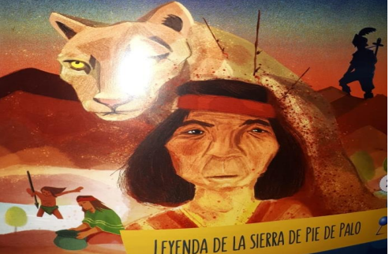

Pie de Palo, San Juan
El "Pie de Palo" en San Juan se refiere tanto a la Sierra de Pie de Palo, un sistema orográfico de las Sierras Pampeanas en el sureste de la provincia, como a la localidad y el barrio que se encuentran a sus pies en el departamento Caucete. La sierra es un importante accidente geográfico con una altura media de unos \(3.000\) metros y se caracteriza por sus ricos yacimientos de arte rupestre y leyendas sobre gigantes con pies de palo.
saber +

Naturaleza e Historia
La Sierra de Pie de Palo, ubicada en el sureste de San Juan, es mucho más que un sistema montañoso. Actuando como una barrera natural que da forma a los Médanos Grandes, este sitio es un tesoro arqueológico y cultural. Sus quebradas albergan una rica concentración de arte rupestre prehispánico, con petroglifos de las culturas Huarpe e Inca en lugares como la Quebrada del Gato o del Pozo del Indio. Estas representaciones de figuras humanas, animales y símbolos abstractos narran historias milenarias. Además, la zona es el escenario de leyendas locales sobre caciques valientes y tesoros escondidos, y da nombre a una localidad en Caucete, combinando un paisaje geológico único con una profunda identidad histórica.
saber +

Leyenda de Pie de Palo
La leyenda del enfrentamiento del cacique huarpe de Pie de Palo narra un suceso crucial que le daría su nombre y definiría su destino:
La paz de la comunidad huarpe que habitaba las tierras de la actual San Juan se veía constantemente amenazada por un feroz puma (o en algunas versiones, un gigante) que atemorizaba a los pobladores y causaba estragos.
Un día, el valiente cacique de la tribu decidió que la situación no podía continuar y optó por enfrentar a la bestia. La leyenda describe el encuentro como una gran lucha. El cacique persiguió al animal y ambos se trenzaron en un combate encarnizado, cuerpo a cuerpo.
saber +